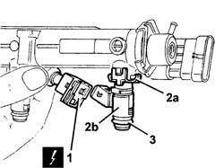

1056B68 set of injectors - r + r with fuel manifold pipe removed - includes seal replacement
- Path
- Procedures > 10 ENGINE > 1056 PETROL INJECTION SYSTEM > 1056B MULTI-POINT INJECTION SYSTEM (MPI) > 1056B68 set of injectors - r + r with fuel manifold pipe removed - includes seal replacement
- Kind
- repair procedure (removal / refitting; the operation number is the code)
- Applies to
- engines: 1.2 8v, 1.4 8v, 1.6 16v; all production periods
- Interactive page
- https://sloeber94.github.io/elrnDB-fDbl/en/#/2584246
Applies to: engines: 1.6 16v; all production periods
Op. 1056B70 INJECTOR (ONE) - R + R WITH FUEL MANIFOLD PIPE REMOVED - INCLUDES SEAL REPLACEMNT
Applies to: engines: 1.6 16v; all production periods
 Removing
Removing
 Refitting
Refitting1. Disconnect the electrical connections from the injectors.
Description | Connector | |
|---|---|---|
1 | Injector |
2. Remove the retainers (2a) and remove the injectors (2b) from the rail.
3. Remove the seals from the injectors

Applies to: engines: 1.6 16v; all production periods
Refitting
RemovingFit new seals on the injectors.
Fit the injectors on the rail and secure them using the retainers.
Connect the electrical connections to the injectors.
Description | Connector | |
|---|---|---|
- | Injector |
Applies to: engines: 1.4 8v; all production periods
Removing
RefittingOp. 1056B70 INJECTOR (ONE) - R + R WITH FUEL MANIFOLD PIPE REMOVED - INCLUDES SEAL REPLACEMNT
Applies to: engines: 1.4 8v; all production periods
Refitting
RemovingOp. 1056B70 INJECTOR (ONE) - R + R WITH FUEL MANIFOLD PIPE REMOVED - INCLUDES SEAL REPLACEMNT
Topics linked from this page (2)
- 1056B70 injector (one) - r + r with fuel manifold pipe removed - includes seal replacemnt
- N070 INJECTOR